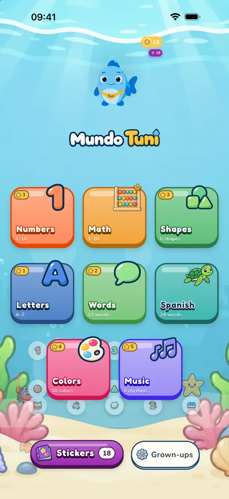
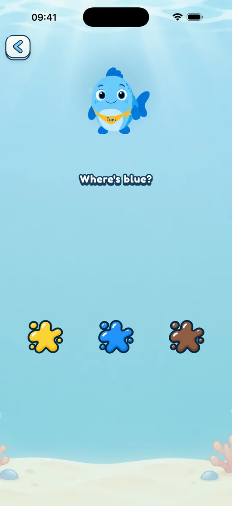
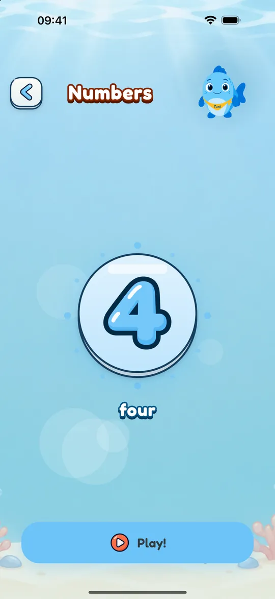
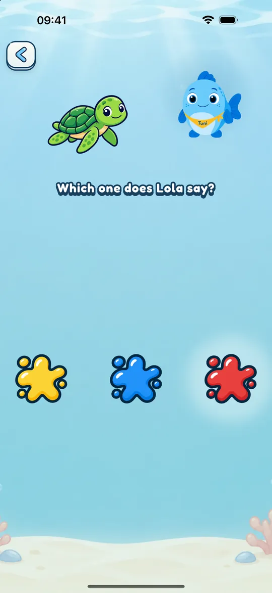
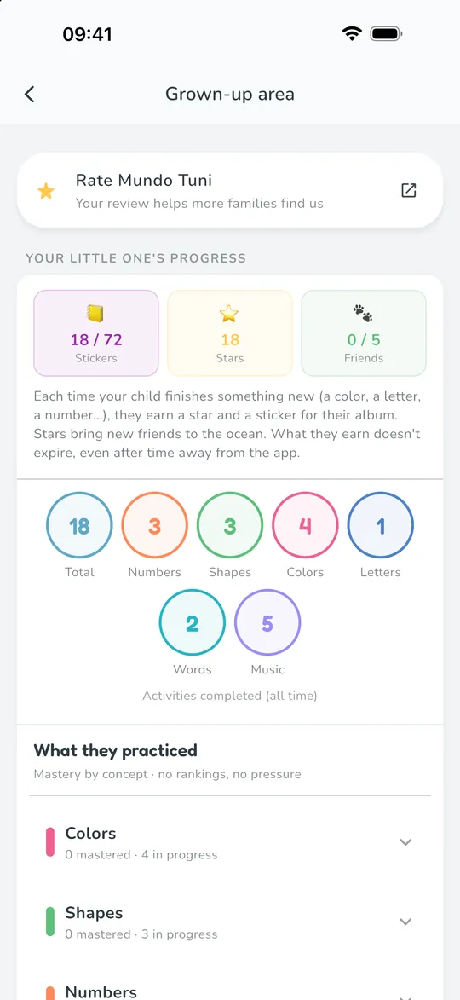

Ages 2 to 6 · English · Español · Català
Learning through play, at a calm pace
Numbers, letters, shapes, colors, words, music, math, and Spanish with Tuni, a baby tuna who explains everything out loud. No reading needed.

- No ads
- No sign-up
- Works offline


Made for little ones, and for the grown-ups who care for them
-
No ads, no surprises
No ads and no sign-up. Purchases and settings sit behind a grown-up gate.
-
For kids who can’t read yet
Tuni guides every game out loud: in American English, in Spanish from Spain or Latin America, or in Catalan.
-
At their own pace
No streaks, no countdowns. If you like, set a play time and Tuni says goodbye calmly when it’s up.
-
Their data stays home
Progress stays on your device. The app doesn’t ask for your child’s name or date of birth.


Many kids’ apps are built so children won’t stop. Mundo Tuni is built to end calmly.
The American Academy of Pediatrics explains that many platforms are designed to keep kids engaged: autoplay, frequent rewards, ads. Mundo Tuni has no ads, streaks or countdowns, lets you set a play time and ends calmly. And pediatric guidelines advise, first of all, little screen time and, if you use it, watching together.
Eight worlds to explore
More than 190 activities in the full catalog. What appears depends on the age you choose.
-

Numbers
Count objects, trace numerals and match.
-

Letters
A to Z, with tracing and example words.
-

Shapes
Six shapes to recognize, fit and sort.
-

Colors
Ten colors to find, match and paint.
-

Words
Twelve first words, each with a picture and a voice.
-

Music
Eight rhythms with drum, bell, claps and more.
-

Math
For ages 4 to 6: compare, add and subtract with objects, patterns and ordering.
-

Spanish with Lola
Twenty-four words in Spanish with Lola the turtle.
Every world has free content; the rest unlocks with a one-time purchase.

Short, clear, calm games
Each game asks for one thing, with Tuni’s voice and no text to read. Colors are soft and sounds are gentle.
- Games of listening, tapping, dragging and tracing
- In the six main worlds, a star and a sticker for every item completed
- Tuni’s subtitles and colorblind support, if you need them

English · Español · Català
In their language, with a friend who speaks another
Choose the game language when you start, or change it any time in the grown-up area. Spanish has voices from Spain and Latin America.
- English (US)
- Español (España)
- Español (Latinoamérica)
- Català
Lola the turtle teaches 24 words in Latin American Spanish when the game language is English. When it’s Spanish or Catalan, Lola speaks American English.


Grows with your child
You choose the age group, and the app never changes it on its own. Activities and difficulty adapt to each one.
- 2
Toddlers
Numbers 1 to 5, riddles with two pictures and easier tracing.
- 3
Preschoolers
Numbers 1 to 10, color mixing and first-sound games with letters.
- 4–6
Big kids
Everything in Preschoolers, plus the Math world.


Grown-up area
You decide how they play
Behind a grown-up gate you’ll find their progress and every setting.
- What they’ve practiced, concept by concept, with no rankings
- Play time of 5, 10 or 15 minutes, with a rest screen
- Language, age, subtitles and colorblind support
- Hide the language corner if you prefer
A sticker for every win
Finish a number, a letter or a color and your child earns a sticker for their album. There are more than 70 across the six main worlds.


From the blog: guides for families
Sourced ideas for playing and learning with kids ages 2 to 6.
-
My Child Understands Spanish but Answers in English: What to Do
Your child understands Spanish but answers in English? What research links to speaking, what CHSA says is normal, and when to ask a specialist.
-
Colors and Numbers in Spanish: Play Ideas for Toddlers
Colors and numbers in Spanish for toddlers: words with both accents (Spain and Latin America), what to expect by age, and easy games with no flashcards.
-
Bilingual Speech Delay: Do Two Languages Cause It?
Does raising a bilingual child cause a speech delay? What CHSA/ASHA and the AAP say, how much mixing is normal and when to ask for an evaluation.

Try it free
Download it for your child and try the free content in every world together. If you like it, the rest unlocks with a one-time purchase.
- No ads
- In English, Spanish and Catalan
- For iPhone and iPad